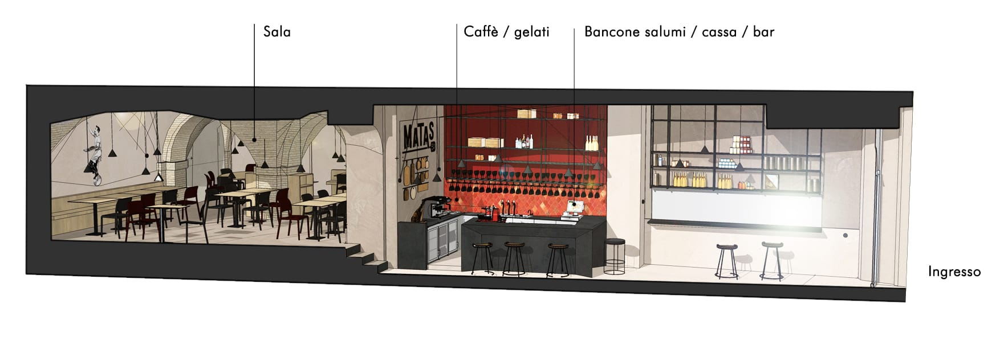
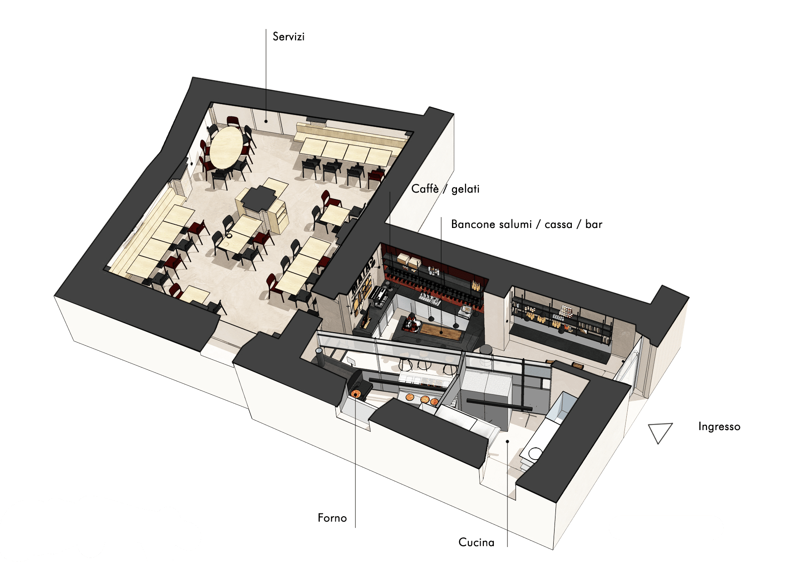
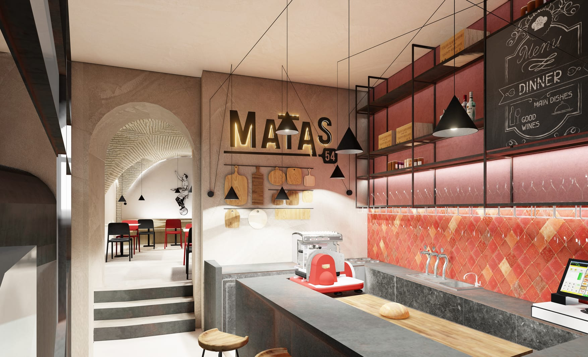

Il nostro locale
Stefano Morini e Antonio De Iure, sull’onda del rilancio del Quartiere Guasco di Ancona, insieme nel progetto MATAS54, fanno rivivere un locale storico che nel tempo ha avuto destinazioni diverse, dall’antica Ciancianella, ritrovo dei giovani anconetani degli anni ’70, alla Pizzeria Jasmine.
Grazie alla collaborazione con lo studio di Architettura Sardellini Marasca e all’impegno e competenza del suo team, MATAS54, senza snaturare lo stile e l’atmosfera dell’antico palazzo di cui fa parte, ha assunto, attraverso i colori, i materiali e le luci, l’aspetto di un locale nuovo e contemporaneo.
Un luogo storico ha migliaia di anime che lo hanno attraversato nei secoli. E un locale affascinante come quello di Via Matas 54 aveva solo bisogno di far emergere l’anima che più si addiceva al pensiero dei nuovi gestori.
Un luogo giovane e informale, facile ma non banale, dove sentirsi a proprio agio, un luogo anche internazionale, un pò hipster e pronto ad accogliere chiunque.
Il ruolo del nostro studio è stato di far emergere quest’anima tentando di generare e comunicare una nuova esperienza urbana e gastronomica che fosse in grado di prendere l’avventore dalla strada e trasportarlo in un nuovo mondo.
L’immagine è rinnovata già sulla via, il vecchio portone in legno esistente è sostituito da una nuova grande porta bilico trasparente e dall’ingresso si scorge la nuova distribuzione interna e la grande scritta a tubo neon sul fondale della prima sala.
La vera sfida di questo progetto è stata infatti soprattutto di appropriarsi e caratterizzare la prima sala che, da sempre, è stata solo luogo di passaggio, mentre oggi diventa il cuore pulsante del locale.

Una nuova parete in ferro grezzo la taglia in diagonale, scandisce lo spazio dedicato alla cucina, nascondendone alcune parti più di servizio e scoprendo quella più significativa, ovvero il mondo del pizzaiolo e del nuovo forno Moretti Neapolis dal design innovativo.
Sul fronte speculare c’è il grande spazio dell’accoglienza e della convivialità: un grande bancone/scultura in ferro grezzo è l’elemento centrale del servizio al banco, un’affettatrice Berkel sovrastata da una collezione di antichi taglieri appesi al muro; la grande parete rosso scuro del retrobanco arricchita da una composizione in cotto artigianale smaltato sempre sui toni caldi dei rossi.
Il banco e il mensolone in ferro dell’ingresso sottolineano la volontà di creare un ambiente intimo, informale, dove appoggiarsi, prendere un aperitivo al volo o un tagliere, magari mentre si aspetta una pizza. Sulle mensole in ferro appena si entra sono esposti i prodotti e le materie prime di alta qualità selezionati dai gestori.
Ma la vera sorpresa è la sala storica dalle volte a crociera in mattoni, un tesoro nascosto che solo salendo i tre gradini che separano le due sale sarà possibile scoprire. Le bellissime volte custodite gelosamente nel tempo, sono arricchite da un nuovo spirito di libertà che aleggia e caratterizza tutto il nuovo locale: un gioco di luci creato con lampade a cono nere opache che fluttuano nello spazio e i cavi tesi che sfiorano le volte e tracciano percorsi visivi ai quali si ricollega la splendida grafica coordinata creata appositamente dall’artista francese Hélène Valverde. Per finire, un bellissimo pavimento stonalizzato in microcemento grigio caldo lega tutti gli ambienti unificandone l’immagine generale.